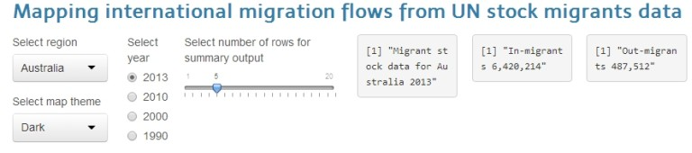
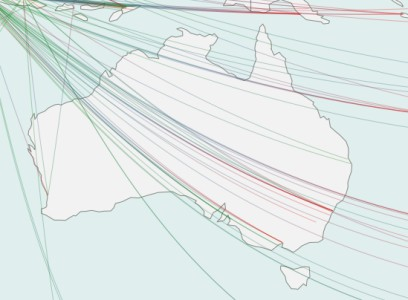
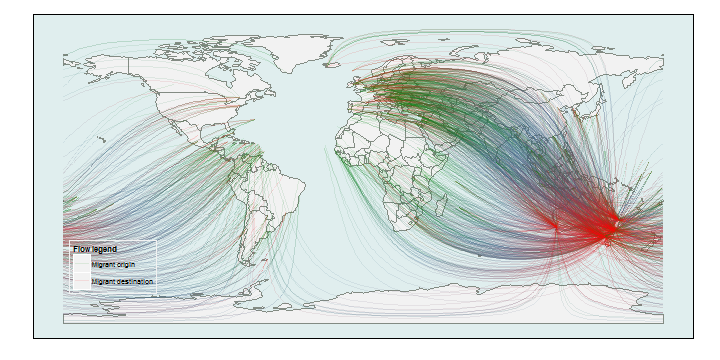

1 | Shiny app pitch introduction
Visualizing international migration flows using UN migrants stock data
This is for visualizing international migration flows to and from a selected region using UN migrants stock data.
Colors to visualize direction of movement, and number of arcs to visualize size of movement.
It's very easy to use, just select the region, theme, year to
update the output. That's it!
Try it live at https://asheshwor.shinyapps.io/migrationviz/

Screenshot of options
2 | Source of data
Reading migration data from excel file:
dataloc <- "data/UN_MigrantStockByOriginAndDestination_2013.xls"
readMigrationTable <- function() {
data <- read.xlsx2(dataloc, sheetName = sheetName, startRow = 16,
colIndex = c(2, 4 , 10:241),
colClasses = c("character", rep("numeric", 232))) #read excel sheet selected columns and rows
return(data)
}
Reading world map shape file and cities database:
# read world shapefile downloaded from NaturalEarthData.com
wmap <- readShapeSpatial("data/110m_cultural/ne_110m_admin_0_countries.shp")
# read cities database downloaded from geonames.org
places <- read.csv("data/cities1000.csv", header=FALSE, stringsAsFactors=FALSE)
3 | Data processing
With some processing, a data-frame with all computed connections is created. Following is an example for Australia:
## source destination stock lat.d lon.d lat.s lon.s stocklog id
## 1 AD AU 22 -27 133 42.5 1.5 3 1
## 2 AD AU 22 -27 133 42.5 1.5 3 1
## 3 AD AU 22 -27 133 42.5 1.5 3 1
## 4 AE AU 5890 -27 133 24.0 54.0 9 2
## 5 AE AU 5890 -27 133 24.0 54.0 9 2
## source destination stock lat.d lon.d lat.s lon.s stocklog id
## 2359 ZW AU 34034 -27 133 -20 30 10 349
## 2360 ZW AU 34034 -27 133 -20 30 10 349
## 2361 ZW AU 34034 -27 133 -20 30 10 349
## 2362 ZW AU 34034 -27 133 -20 30 10 349
## 2363 ZW AU 34034 -27 133 -20 30 10 349
In the next step, the repeating coordinates are replaced with locations of cities in the region.
4 | Selecting origin and destination points
To select the location, the data is sorted by location and the getRandomCity function retrieves a data-frame with the specified number of cities in the selected region with probability of selection based on population.
sample(c(1:nrow(allCities)), num, replace=TRUE, prob=allCities$pop)

Cities with higher population are more likely to get selected
5 | Generating the final map
Finally the arc segments from obtained using gcIntermediate function are and plotted using ggplot2.

An example plot for Australia with 'light' map theme
Try it yourself at https://asheshwor.shinyapps.io/migrationviz/
Thank you!